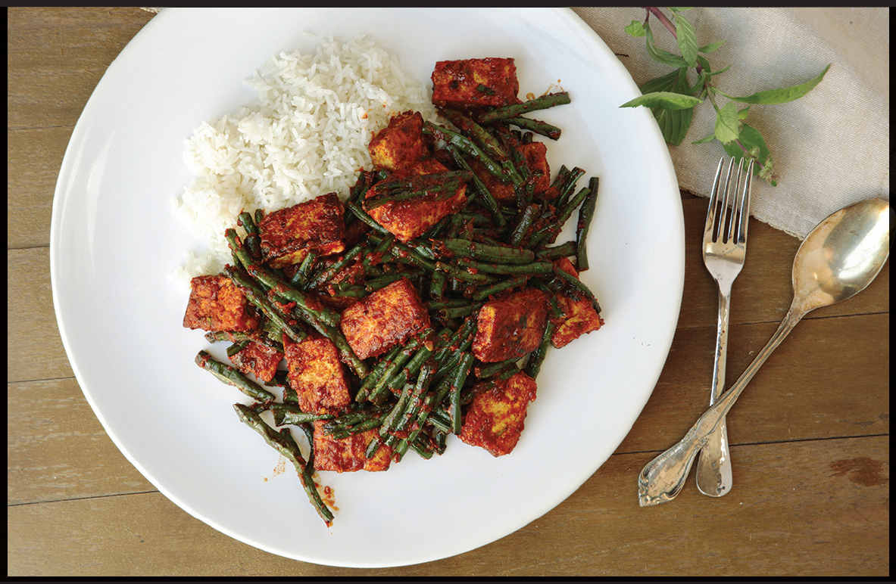

THAI-STYLE TOFU WITH GREEN BEANS AND RED CURRY PASTE (PAD PRIK KING)

|
Yield Serves 4 |
Active Time 30 minutes Total Time 30 minutes |
Store-bought curry paste tends to be very salty, so you can’t add quite as much of it to a dish as the homemade stuff.
INGREDIENTS
3 tablespoons (45 ml) peanut, rice bran, or other neutral oil
One 12-ounce (340 g) block firm tofu, cut into 1- inch squares ½ inch thick, pressed firmly between paper towels
1 pound (450 g) green beans or long beans, trimmed and cut into 1½-inch lengths
¼ cup (60 ml) Thai red curry paste, homemade (here) or store-bought
1 tablespoon (12 g) sugar
1 tablespoon (15 ml) soy sauce or fish sauce
Handful of chopped fresh Thai or Italian basil leaves
Kosher salt (optional)
Steamed jasmine rice, for serving
Stroll by a curry vendor in a Thai food court and you’ll likely see one curry that stands out from the rest: pad prik king. Unlike most other curries, which are served with plenty of liquid—be it coconut milk or broth—pad prik king is served dry, its intensely flavored curry paste coating each morsel of food. It can be made with any number of vegetables or meat, but I particularly love the common combination of beans and tofu.
Typically, pad prik king would be made by first searing the chile paste in hot oil, which helps to develop and deepen its flavor, then adding the tofu and beans and tossing everything together. I prefer to get a little more flavor and texture in the dish by first panfrying the tofu until it’s crisp, removing it from the pan, blistering the green beans in more hot oil, removing them as well, then finally blooming the curry paste and tossing everything back together.
DIRECTIONS
1 Heat 1 tablespoon (15 ml) of the oil in a wok over medium-high heat until shimmering. Add the tofu, spread it into a single layer, and cook, occasionally shaking the pan gently, until crisp on the first side, about 3 minutes. Flip the tofu and continue cooking until the second side is crisp, about 3 minutes longer. Transfer to a bowl and set aside.
2 Return the wok to high heat until lightly smoking. Add 1 tablespoon (15 ml) of the remaining oil and swirl to coat. Immediately add the beans and cook, stirring and tossing occasionally, until blistered and tender, about 3 minutes. Transfer to the bowl with the tofu.
3 Add the remaining tablespoon (15 ml) oil to the wok and return it to medium-high heat until lightly smoking. Immediately add the curry paste and cook, stirring, scraping, and smearing the curry paste around the bottom of the wok until you see fat start to break out and the curry paste gets a toasty aroma, about 2 minutes.
4 Return the tofu and beans to the pan along with the sugar, soy sauce or fish sauce, and basil. Stir and toss to combine and coat the tofu and beans in curry paste. Season with salt to taste if desired. Serve immediately with steamed jasmine rice.